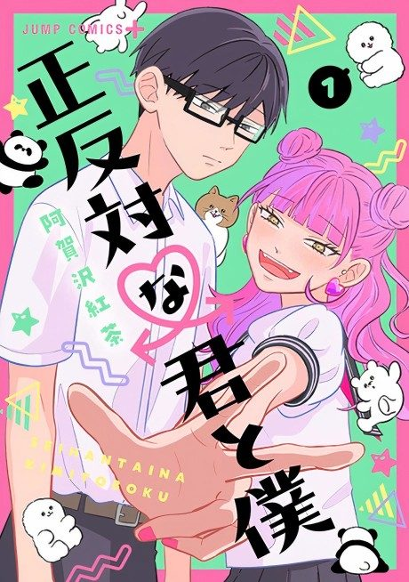

MangaUnclear
Anime
MangaUnclear
Anime
MangaYou and I Are Polar Opposites
正反対な君と僕
AniList8.3
Animeter—
2 seasons25 ep
MangaUnclear
2 seasons, 25 episodes
In airing order. Episode numbers on this site count straight through every season, so season 2 starts at episode 13.
1
2026 · TV
You and I Are Polar Opposites
Episodes1–1212 ep
2
2026 · TV
You and I Are Polar Opposites Season 2
Episodes13–2513 ep
Sources: AniList
More like You and I Are Polar Opposites
 Manga Ch. 1148.1
Manga Ch. 1148.1
 Manga Ch. 827.4
Manga Ch. 827.4
 Manga Ch. 667.6
Manga Ch. 667.6
 Manga Ch. 17.4
Manga Ch. 17.4
 Manga Ch. 1627.6
Manga Ch. 1627.6
 Unclear7.7
Unclear7.7